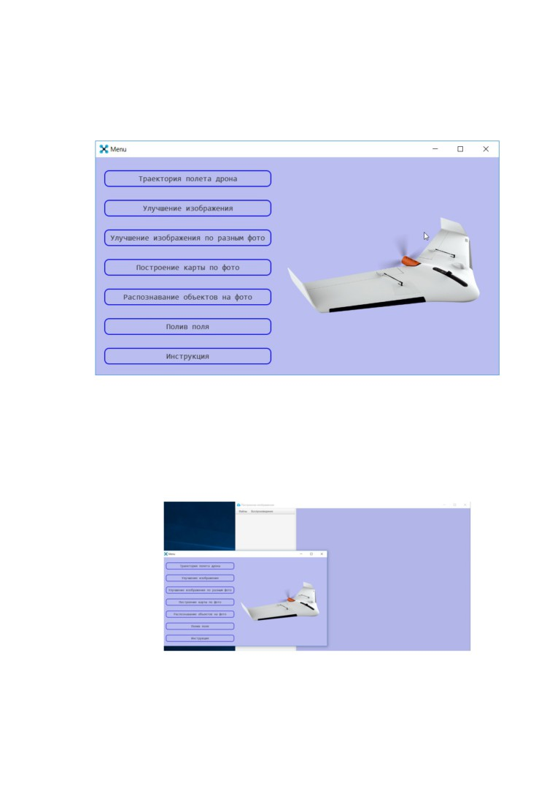
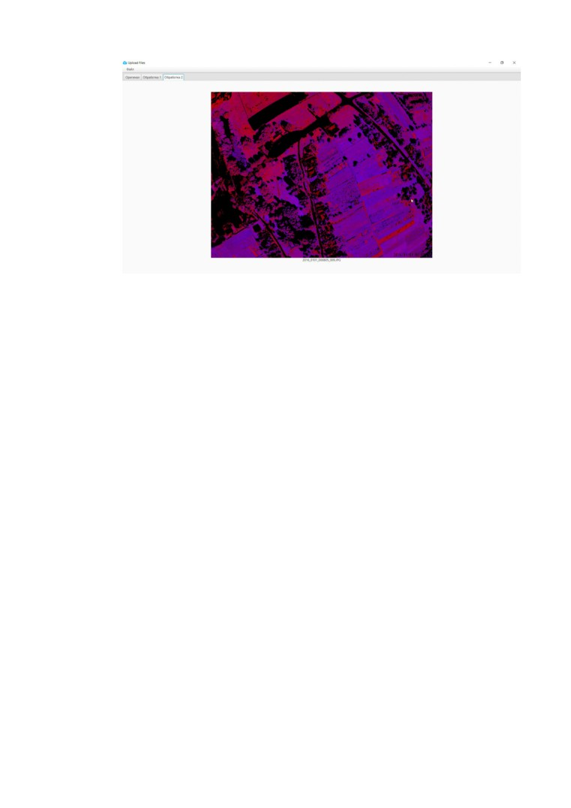

2
Оглавление
I.
Возможности программы Dronio - приложение для обработки данных полётов дронов
3
II.
Интерфейс программы
4
III. Траектория полёта дрона
5
IV. Улучшение изображения
6
V. Улучшение изображения по разным фото
9
VI. Построение карты по фото
11
VII. Распознавание объектов на фото
13
VIII. Полив поля
14
3
I. Возможности программы Dronio
- приложение для обработки данных
полётов дронов
1.
Данная программа позволяет пользователю рассчитать
траекторию полёта дрона на основе данных: максимальной высоты полёта,
фокусному расстоянию объектива, геометрии фотосенсора, заряда батареи и
её расхода. Интерфейс программы позволяет ввести данные, а после их
обработки покажет покрытие территории.
2.
В Dronio можно построить изображение наилучшего качества на
основе набора фотографий: построение большого изображения с отдельных
кадров - частей территории; повышение чёткости изображений.
3.
Присутствует также возможность построения непрерывной,
хронологической последовательности фотографий. Это позволяет отследить
нужную территорию, и не расходовать лишние ресурсы.
4.
В данной программе можно увидеть изменения в ситуации на
фотографии на основе последовательности фотографий, а также распознать
новые объекты на фото или те что движутся.
5.
Использование программы Dronio
- отличная возможность
отследить состояние того или иного поля. Пользователь сможет увидеть
необходимость, и что очень важно, - интенсивность полива (2 варианта)
конкретной территории всего лишь на основе фото.

5
II. Интерфейс программы
При запуске программы перед пользователем открывается интерфейс
программы (рис. 1):
Рис 1. Интерфейс программы «Dronio»
Интерфейс программы
«Dronio» содержит основное меню, через
которое можно запустить несколько частей программы и работать в них
одновременно.
Рис 2. Пример работы программы с несколькими пунктами одновременно
Пункт меню
«Инструкция» позволяет пользователю загрузить
документ с подробным описанием работы программы.
6
III.
Траектория полёта дрона
Чтобы запустить программу для расчёта траектории полёта дрона
необходимо выбрать в меню нажать одним кликом кнопку «Траектория
полёта дрона».
Далее высветится окно с необходимыми окнами для работы. В левой
части окна (рис. 3.1) необходимо ввести данные для расчёта, после чего
нажать на кнопку «Ок». Запустится окно с картой (рис. 3.2), на которой будет
показана траектория полёта, а также покрытие заданной территории.
Рис. 3.1. Образец введения данных для расчёта траектории полёта
7
Рис. 3.2. Пример работы программы - отображение траектории полёта
и покрытия заданной территории.
Так же присутствуют кнопки “Save” и “Load”.
При нажатии на кнопку “Save” вы сможете сохранить данные в файл
все введенные вами данные. При нажатии на “Load” вы сможете сразу
загрузить данные из файла, и программа сразу же построит вам
траекторию полета дрона.
8
IV. Улучшение изображения
Чтобы запустить интерфейс для построения изображение наилучшего
качества необходимо выбрать в меню кнопку «Улучшение изображения»,
после чего откроется окно
- рабочая область. В данном интерфейсе
необходимо в верхнем меню нажать Файл->Загрузить
(рис.
4.1)
для
загрузки изображений или Файл->Добавить
(рис. 4.2) для добавления к
текущему набору. После выбора или добавления необходимого количества
фото нужно на вкладке вверху выполнить: Воспроизведение->Вручную
(рис. 4.3) после чего программа построит изображение с повышенным
уровнем качества и увеличением чёткости исходных фото (рис. 4.4).
Рис. 4.1. Загрузка новых фото
9
Рис. 4.2. Добавление фото к предыдущему сеансу
Рис. 4.3. Запуск обработки фото
10
Рис. 4.4. Результат работы программы при повышении чёткости изображения
Таким образом, имея несколько фотографий разного качества одного и
того же объекта программа из всех фотографий на выходе возвращает
изображение наилучшего качества. Также, так как размеры фото могут быть
разными мы дали возможность пользователю регулировать размеры окна,
просто перетягивая концы изображения.
11
V. Улучшение изображения по разным фото
Чтобы запустить интерфейс для улучшения качества фотографий
необходимо выбрать в меню пункт «Улучшение изображения по разным
фото», после чего интерфейс программы предоставит пользователю
возможность добавить фотографии и файла, в котором будут данные о
расположении дрона в момент фотографирования.
На данном этапе необходимо в верхнем меню выбрать (рис. 5.1)
вкладку Файл->Загрузить файлы для загрузки всех изображений и файла с
координатами или Файл->Добавить файлы для добавления к текущему
набору; нажать кнопку Воспроизведение->Начать после чего программа из
заданных фотографий, на основе файла с координатами построит одно
изображение (рис. 5.2) наилучшего качества, демонстрируя всю территорию,
которую охватил дрон во время движения и фотофиксации по заданным
координатам.
Рис. 5.1 Добавление фото и данных о координатах полёта дрона
12
Рис. 5.2 Результат работы пункта «Улучшение изображения по разным
фото»
13
VI. Построение карты по фото
Чтобы запустить интерфейс для построения траектории по фото,
необходимо выбрать пункт в меню «Построение карты по фото», нажав на
соответствующую кнопку.
На данном этапе необходимо в вкладке «Файл», которая расположена
верхнем меню нажать Файл->Загрузить файлы для загрузки всех
изображений. Далее выбрать кнопку Воспроизведение->Вручную после чего
программа из заданных фотографий построит путь (рис. 6.1), по которому
летел дрон.
Рис. 6.1. Пример построения карты полёта дрона по заданным фото
Чтобы увеличить или уменьшить масштаб построенной траектории
(рис. 6.2), необходимо перемещать ползунок верх или вниз соответственно.
Рис. 6.2. Пример изменения масштаба построенной траектории полёта
дрона
14
VII. Распознавание объектов на фото
Чтобы запустить интерфейс для распознавания ситуации на фиксацию
и отслеживания объектов из последовательности фотографий необходимо
выбрать в меню кнопку «Распознавание объектов на фото». После чего в
данном интерфейсе необходимо в верхнем меню выбрать Файл->Загрузить
файл для загрузки изображений или Файл->Добавить для добавления фото
к ранее выбранному набору. Далее Воспроизведение->Вручную, после чего
программа выделит распознанные объекты и позволит пользователю
просмотреть изменения расположения объектов при помощи кнопок-стрелок
(рис. 7.1).
Рис. 7.1. Пример работы программы с распознаванием объектов
Также можно выбрать Воспроизведение->Автоматически после чего
программа выделит распознанные объекты, выделит новые объекты,
объекты, которые могут двигаться
(рис.
7.2.) и покажет данную
последовательность как слайдшоу .
15
Рис. 7.2. Отображение распознанных объектов
Для удобства работы пользователя с программой, при автоматическом
режиме можно назначить задержку между «слайдами»
(рис. 7.3), для этого
необходимо выбрать Параметры задержки->Установить задержку.
Рис. 7.3. Указание задержки отображения «слайдов»
16
VIII. Полив поля
Чтобы запустить интерфейс для рекомендации полива полей
необходимо выбрать в меню кнопку
«Полив поля». На данном этапе
необходимо в верхнем меню выбрать Файл->Загрузить для загрузки
изображения. У вас появится меню выбора изображений:
«Оригинал»,
«Обработка 1» , «Обработка 2» (рис. 8.1).
Рис. 8.1. Интерфейс программы во время работы - пункт «Полив
поля»
Оригинал - начальное изображение поля (рис. 8.2). Отображает
пользователю на экране исходное фото для обработки и дальнейшего
отображения необходимости полива.
17
Рис. 8.2. Состояние работы программы с оригиналом изображения
Обработка 1 (рис. 8.3) - программа, обработав исходное фото поля,
выделяет красным цветом места, которые нуждаются в срочном поливе.
Рис. 8.3. Срочный полив частей поля
Обработка 2 - программа отображает интенсивность необходимости
полива поля (рис. 8.4). От синего - слабо поливать, до красного - наиболее
необходимо к поливу. Чёрный цвет указывает на то, что данный участок не
поле (дорога, ангар, построение) и его поливать не нужно.

18
Рис. 8.4. Интенсивность полива полей